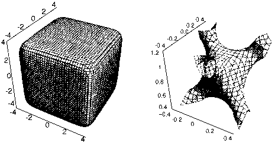

Book Review - Crystal Structure Determination by William Clegg
Crystal Structure Determination
Author: William Clegg, University of Newcastle upon Tyne and Daresbury Laboratory
Publisher: Oxford University Press. May 1998 (Oxford Chemistry Primer No 60)
ISBN 0 19 855 901 1 £5.99 paperback 85 pages
The low cost of books in this series is made possible by the generous
support of Zeneca Ltd.
This is an excellent and highly successful attempt to get a quart into a pint pot. Taken alone, the title 'Crystal Structure Determination' is over ambitious, but in the context of the Oxford Chemistry Primer series it neatly fills a niche, providing a very readable overview of the process. The title also makes it clear that the book is not an introduction to general crystallography.
These Primers are aimed at chemistry undergraduates, and Prof Clegg has tailored the content at exactly the correct level. The text does not attempt to explain how to 'do' crystal structure analysis, but it carefully explains how it is done, and how the findings can be applied in the general field of chemistry. In fact, at 85 pages length, it would make excellent reading for almost any established chemist starting a 3 hour plane or train journey.
The introductory chapter sets the scene through a brief and not too mathematical description of the physics of diffraction. The discussion of symmetry is gently blended into the text so as to avoid the intellectual shock of more formal presentations, and includes coverage of the relationship with the Schoenflies notation.
Chapter 2 covers the process of single crystal structure determination, starting with a flow diagram. Each step is accompanied with an estimate of the time taken to complete the step - a table which chemists who last looked at crystallography more than 5 years ago might do well to contemplate. The section on experimental techniques is, as one might expect from Prof Clegg, quite up-to-date, and he has taken great care to ensure that the text can be read and understood without reference to any particular hardware or software. This is the only chapter which contains material which might be changed in a future edition. To my mind, the section 'A one-dimensional illustration of direct methods and Patterson synthesis' is not required at this level and could be omitted. Since multi-solution use of the tangent formula is at the heart of most modern direct methods programs, a brief description of this might be more use than the example of phase addition.
Chapter 3 dissects 6 structure analyses, explains the problems, and illustrates what can be gleaned from the analyses. I would have chosen a purely organic material as one of the examples, even if only to make organic chemists feel at home.
The final chapter introduces further problems, further techniques, and draws out the relationship between single crystal and powder methods, explaining why analysis from powders is usually more uncertain. The suggested 'Further Reading' is well chosen, but the 'Index' could perhaps have been more exhaustive.
This book is excellent value, and should be read by every chemistry undergraduate. For those going on to research in crystallography, it serves as a good introduction to the more meaty texts. Highly recommended.
David Watkin, University of Oxford
Book Review - 2 Dorothy Hodgkin by Georgina Ferry
Dorothy Hodgkin: A Life
Author: Georgina Ferry
Publisher: Granta Books, London November 1998
ISBN 1 86207 167 5 £20 hardback 423 pages 31 photographs
Dorothy Hodgkin was a great scientist, a campaigner for peace and the first
British woman to win a Nobel prize. I list her achievements in that order
because I believe that those were her priorities, although others may
disagree. 'Our Dorothy' was very special to members of the British
Crystallographic Association. During her lifetime she preferred working on
solving crystal structures to writing books and although urged to write an
autobiography by her family, friends and colleagues, she only managed the
short one published in Volume 3 of her
'Collected Works' (see Issue 58 of
'Crystallography News' Sept 96 p22).
The author of this first full length biography of Dorothy Hodgkin, Georgina Ferry, wrote an article about Dorothy, published in 1994 in Oxford Today the alumni magazine of the University of Oxford. She has since published similar articles in the local newspapers to try to gain greater recognition of Dorothy's achievements in the city where she did most of her academic work. Dorothy's family were so impressed by these articles that they invited Georgina to write this biography and gave her help and access to the extensive private papers. Dorothy was one of those people who refuse to throw things away, difficult for her family and colleagues, but a boon to biographers. Georgina Ferry never met Dorothy, but she has tried to understand her by spending the last four years talking to her family, friends and colleagues all over the world and consulting the Dorothy Hodgkin Archive in the Bodleian Library, where both her scientific and personal papers are now stored. The result is this massive biography, over 400 pages, weighing almost a kilogram. The author has diligently sifted through the uncataloged personal papers to bring us a wealth of detail about the remarkable story of Dorothy's Life. This is very much a personal, not a scientific story; the author writes in the preface, "I am not a chemist by training, and certainly not a crystallographer".
The book has ten chapters, arranged chronologically, one for each stage of Dorothy's life. The copious notes referring back to the original papers are collected together into 12 pages of small print at the end, just before the index. The first chapter gives us her family background, including that of her parents and siblings. Dorothy was born in Cairo, the first of four daughters, and had an unconventional education and upbringing for those times. The first of the family photographs shows Dorothy at the age of about one year, gazing up adoringly at her mother, one of the great influences on Dorothy. In the first chapter we learn of Dorothy at age ten being introduced to chemistry by growing alum crystals and being enchanted by them. She became an undergraduate at Somerville College, Oxford; surviving letters from her friend at this time, Betty Murray, show Dorothy so engrossed in her crystal structures that it was difficult to persuade her to look after herself by eating regular meals. She moved to Cambridge to work on a Ph.D and was probably fortunate to have had J.D.Bernal as her Ph.D supervisor. Unlike many scientists then and now he generously put his graduate students names on their joint research papers so that her name became known as one of the authors of significant early papers on protein structure. His political views must have reinforced Dorothy's Socialist political tendencies initially fostered by her mother.
In later chapters we read of Dorothy returning to Oxford, of her problems in setting up her own group in a new field, of combining crystallography with marriage and motherhood and we learn what it was like to be a scientist in Oxford during the period 1930 to 1960 when protein crystallography was in its infancy. The final chapters concern her Nobel prize, her peacemaking with the Pugwash convention of concerned scientists and the help she gave to others especially those in India and China.
The main criticism I have is that the book is over long, perhaps because there are no diagrams. We are told many times that Dorothy liked drawing, had a visual mind, and an incredible ability to look at a Patterson function and deduce the crystal structure. If you have no idea what a Patterson function looks like you cannot appreciate how remarkable this ability is, so I think this book should have included at least one example of a Patterson map together with diagrams or photographs of molecular models. Since the author is not a chemist I think she should have omitted the explanations of the science which I think too brief to be effective for non-scientists and unnecessary for crystallographers.
Strangely, although Dorothy had 3 children, none have become crystallographers, so she did not transmit her enthusiasms to her family who were the instigators of this book. Perhaps that is why it is hard to find the excitement of the science among the wealth of personal detail. If you want a concise summary of the many awards Dorothy received you will have to look elsewhere; there are several on the Internet for example. (Link to the Nobel Prize in Chemistry 1964 or to the AIP Women in Crystallography part of the site on the Contribution of women to 20th Century Science)
Hardback books are expensive these days; at £20 this book is reasonable value for money if you are a scientist who already understands the science and want to read the many fascinating details of the life of Dorothy Hodgkin.
Kate Crennell, 4 November 1998
issue position 19/26 December 1998 1Articles about Dorothy Hodgkin have been written by
23 January 1999 2
Book review - 3 The Mathematics of Structures
The Mathematics of Structures. The Exponential Scale
Authors: S.Andersson, M.Jacob
Publisher: R.Oldenbourg Verlag München Wien 1997 Hardback 146 pages
ISBN 3-486-64258-8 ISSN 0930- 486X
Supplement No 13 of Zeitschrift für Kristallographie
Price: DM 118.00 / oeS 861.00 / sFR 102.00
Discount for subscribers to the supplements of Zeitschrift für Kristallographie
Mathematicians have studied minimal surface for over a hundred years. Recently some scientists have begun to think that we would get a greater understanding of interactions between materials if the forces between atoms were modelled by looking at the surfaces between them and represented their structures by isosurfaces of their electron density. Alan Mackay provided a striking image for the front cover of 'Crystallography News' in September 1991. R.Nesper (ETH, Zurich) gave an interesting talk about this at the IUCr Congress in Beijing in 1993; recently Michael Jacob spoke on August 18th at ECM-18 in Prague in the session on Symmetry. He is a co-author of this book which attempts to explain a new formalism which he calls 'exponential scale mathematics', in which several equations are combined on the exponential scale to yield a new 'hybridised' function. For example, the usual definition of a cube needs 6 equations one for each face. Here the definition of a cube is: 10 z + 10 y + 10 z + 10 -x + 10 -y +10 -z = Constant
The base is 10 in this case but it may be any positive number (greater than
1 ); 'e' is usually chosen to link this formalism to the more
traditional ones.

This is a mathematics picture book written by a chemist who finds this method of describing surfaces easier to use when describing structures. The ten chapters give examples of structures showing how this formalism can be used for 2 dimensional plots, closed polyhedra, (the cube on the left of the diagram above) and surfaces such as that on the right, taken from Page 106, (6 catenoids surrounding an interstitial oxygen in hcp). There is no explanation of how the diagrams were made; the Appendix has code in 'Mathematica Notebook' format, so I assume it was the expensive package 'Mathematica'. Does anyone know of a cheaper package to make similar plots?. To understand the relevance of the plots to crystallography one would have to refer to the 23 papers listed at the end under 'References'.
Kate Crennell
 Click here to return to the Index to 'Crystallography news' page
Click here to return to the Index to 'Crystallography news' page